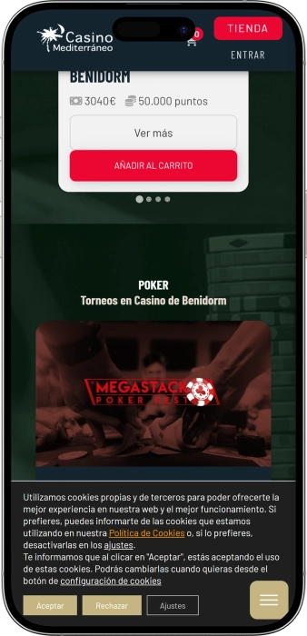

Oferta exclusiva de bienvenida de
Oferta exclusiva de bienvenida de
Disfruta del Casino Premium en el Corazón de Benidorm
Los mejores casinos
Detalles de bonificación
Casino
Bonos
Rate
Giros gratis
Más info
Conseguir
Ventajas
- ¿Buscas un casino con experiencia auténtica? Casino Mediterráneo ofrece poker profesional, máquinas de última generación y un ambiente único en la Costa Blanca. Descubre lo que nos hace diferentes:
-
Torneos de poker Texas Hold'em con premios desde 50€ y SNG diarios
-
Máquinas de slots premium: Novo Roulette, Super Gaminator, Game Chest
-
Restaurante self-service y café-bar abierto todo el día con menú variado
-
Ubicación privilegiada en Avenida Mediterráneo, centro de Benidorm
-
Eventos culturales, galas benéficas y exposiciones de artistas locales
-
Terraza exclusiva con zona de juegos y ambiente mediterráneo relajado
- Únete a miles de jugadores que disfrutan de la mejor experiencia de casino en Benidorm. Nuestro equipo está listo para ofrecerte un servicio excepcional.
Casino Mediterráneo Benidorm App


Nuestra Historia en Benidorm
Casino Mediterráneo Benidorm es un referente del entretenimiento en la Costa Blanca. Ubicados en el corazón de la ciudad, ofrecemos poker profesional, slots de última generación y eventos culturales únicos con vista al Mediterráneo.
- Expansión de la sala de poker con mesas Texas Cash profesionales
- Incorporación de máquinas premium como Novo Roulette y Super Gaminator
- Apertura de terraza exclusiva con zona de slots y ambiente mediterráneo
- Desarrollo de programa cultural con exposiciones y galas benéficas
Operamos bajo la normativa española de juego con máxima transparencia. Nuestras instalaciones cumplen con los estándares de seguridad más exigentes. Todos los torneos están regulados y certificados por autoridades oficiales. Continuamos innovando con nuevos torneos y servicios gastronómicos. Nuestro compromiso con el juego responsable es prioritario. Visítanos y descubre por qué somos la elección preferida de jugadores en Benidorm.
Guía Completa de Poker y Torneos en Benidorm
Poker Texas Hold'em: La Experiencia Profesional
El poker Texas Hold'em es la modalidad estrella en Casino Mediterráneo Benidorm. Este juego de habilidad y estrategia atrae a jugadores de toda España que buscan competir en mesas profesionales con crupiers expertos. Nuestras partidas Cash ofrecen diferentes niveles de buy-in, permitiendo tanto a principiantes como a profesionales disfrutar de la emoción del poker en vivo. La atmósfera única de nuestras salas, combinada con la profesionalidad del servicio, crea la experiencia perfecta para cualquier entusiasta del poker.
Las mesas de poker Texas Cash están disponibles diariamente con diferentes límites de apuestas. Los jugadores pueden elegir entre partidas de límite fijo, pot-limit o no-limit según su experiencia y presupuesto. Cada mesa cuenta con un dealer profesional que garantiza el correcto desarrollo del juego y mantiene un ritmo dinámico que hace que cada partida sea emocionante. Además, nuestro sistema de gestión de mesas permite cambios rápidos entre diferentes niveles de juego.
Torneos Sit & Go: Acción Rápida y Premios Garantizados
Los torneos Sit & Go (SNG) representan una de las opciones más populares en Casino Mediterráneo. Estos torneos de una sola mesa permiten jugar competiciones completas en períodos cortos de tiempo, ideales para quienes buscan emoción sin comprometer toda una jornada. Con un máximo de 10 jugadores por mesa y buy-in desde 50 euros, los SNG ofrecen accesibilidad y diversión garantizada. Esta modalidad es perfecta para practicar estrategias de torneo sin la presión de eventos multimesa más largos.
La estructura de premios de los Sit & Go recompensa a los tres mejores jugadores de cada mesa. El ganador obtiene el 50% del premio total acumulado, el segundo lugar recibe el 30% y el tercer clasificado se lleva el 20% restante. Esta distribución equilibrada hace que incluso llegar a las posiciones finales sea rentable y motivador. Los torneos comienzan automáticamente cuando la mesa se completa, eliminando largos tiempos de espera y garantizando acción constante.
- Buy-in accesible: Torneos SNG desde 50€ permiten participar sin grandes inversiones iniciales, perfectos para jugadores que están desarrollando sus habilidades o prefieren gestionar su bankroll de manera conservadora.
- Duración reducida: Las partidas de una mesa se completan en 1-2 horas aproximadamente, lo que permite jugar múltiples torneos en una misma sesión o encajar el poker en agendas ocupadas.
- Ideal para práctica: Los SNG son excelentes para mejorar habilidades de juego corto (short-handed) y gestión de fichas en diferentes fases del torneo, desde mesa completa hasta heads-up final.
- Estructura equilibrada: Distribución de premios 50-30-20 garantiza recompensas atractivas para los tres primeros puestos, manteniendo la competitividad hasta las últimas manos del torneo.
- Ambiente profesional: Dealers experimentados y mesas de calidad profesional aseguran que cada torneo se desarrolle con los más altos estándares, similar a los eventos de poker internacionales.
Calendario de Torneos Mensuales en Benidorm
Casino Mediterráneo organiza torneos mensuales que atraen a jugadores de toda la región. Estos eventos ofrecen premios garantizados y la oportunidad de competir en un formato de torneo estructurado con múltiples niveles y ciegas progresivas. Los torneos mensuales suelen incluir diferentes modalidades como freezeouts, rebuy y add-on, proporcionando variedad estratégica. Las inscripciones pueden realizarse con anticipación, y el casino ofrece paquetes especiales que combinan el buy-in del torneo con servicios de restauración.
| Tipo de Torneo | Buy-in | Frecuencia | Características |
|---|---|---|---|
| Sit & Go | Desde 50€ | Diario | Una mesa, máx. 10 jugadores, premios 50-30-20 |
| Torneo Mensual | 150€ | Mensual | Multimesa, premios garantizados, estructura profunda |
| Mesas Cash | Variable | Diario | Texas Hold'em, diferentes límites, entrada/salida libre |
| Eventos Especiales | Varía | Ocasional | Festivales, satélites, torneos benéficos |
Máquinas de Slots: Tecnología y Entretenimiento
La sala de máquinas tragaperras de Casino Mediterráneo Benidorm cuenta con los modelos más avanzados del mercado. Desde las populares Novo Roulette hasta las innovadoras Super Gaminator V55+, cada máquina ofrece gráficos de alta definición, múltiples líneas de pago y jackpots progresivos. La variedad incluye slots clásicas de tres rodillos para nostálgicos, video slots de cinco carretes con funciones bonus avanzadas, y máquinas temáticas basadas en películas y series populares. Todas las máquinas están certificadas y ofrecen porcentajes de retorno al jugador transparentes.
En la terraza exclusiva del casino, los jugadores pueden disfrutar de slots en un ambiente mediterráneo único. Esta zona cuenta con dos módulos de Novo Roulette, un módulo de Novo Slot, dos máquinas Super Gaminator V55+, una Pick & Game 2 y una Game Chest. La combinación de juego al aire libre con tecnología de última generación crea una experiencia diferenciadora. La terraza está disponible desde las 10:00 hasta el cierre del casino, ofreciendo flexibilidad horaria máxima.
- Novo Roulette: Ruleta electrónica multijugador con gráficos 3D, múltiples ángulos de cámara y estadísticas en tiempo real que ayudan a los jugadores a tomar decisiones informadas basadas en resultados históricos.
- Super Gaminator V55+: Máquina premium con más de 50 juegos diferentes, pantalla táctil de alta resolución, bonos interactivos y sistema de fidelización que acumula puntos en cada jugada.
- Game Chest: Slot innovadora con mecánica de cofres del tesoro, rondas bonus expansivas, multiplicadores progresivos y función de compra de bonus para acción instantánea.
- Pick & Game 2: Sistema multi-juego que permite cambiar entre diferentes títulos sin levantarse de la máquina, ideal para probar varias opciones y encontrar tu slot favorita.
Gastronomía y Servicios Complementarios
El restaurante self-service ubicado en la primera planta ofrece un menú completo a precio accesible. Los días de torneo, el buffet está disponible con una selección de primeros platos, platos principales, postres y bebidas. La calidad gastronómica complementa perfectamente la experiencia de juego, permitiendo a los jugadores recargar energías sin abandonar las instalaciones. El menú incluye opciones mediterráneas, platos internacionales y alternativas vegetarianas.
El café-bar permanece abierto durante todo el horario del casino, ofreciendo bocadillos variados, hamburguesas gourmet, raciones para compartir y una amplia carta de bebidas. La zona de Juegging integra pantallas deportivas donde disfrutar de eventos en vivo mientras se toma algo. Este espacio polivalente se ha convertido en punto de encuentro para jugadores que buscan socializar entre partidas o relajarse con un snack ligero.
Compromiso Social y Cultural
Casino Mediterráneo mantiene un programa cultural permanente que incluye exposiciones de artistas locales, presentaciones de libros y recitales de poesía. Las instalaciones se transforman en galería de arte temporal, ofreciendo visibilidad a creadores emergentes de la Costa Blanca. Este compromiso con la cultura local diferencia al casino como espacio multifuncional que va más allá del entretenimiento convencional.
Las galas benéficas organizadas periódicamente demuestran la responsabilidad social del casino. Estos eventos recaudan fondos para organizaciones sin ánimo de lucro de la región, combinando entretenimiento con solidaridad. También se celebran pasarelas de moda que apoyan a diseñadores locales y eventos temáticos que dinamizan la vida cultural de Benidorm.
La ubicación en Avenida Mediterráneo 55 sitúa al casino en el epicentro de Benidorm, con acceso fácil desde cualquier punto de la ciudad. El horario flexible se adapta a las estaciones, garantizando disponibilidad tanto en temporada alta como baja. Para reservas de torneos o información sobre eventos, el equipo está disponible por teléfono en el 966 387 004 o por correo electrónico en casinos@casinomediterraneo.es.
Proveedores de software
Estrategias de Poker y Gestión de Bankroll
Fundamentos del Poker Texas Hold'em para Principiantes
Dominar el poker Texas Hold'em requiere comprender tanto las reglas básicas como las estrategias avanzadas. Este juego combina habilidad matemática, lectura psicológica y gestión disciplinada del riesgo. Los jugadores reciben dos cartas privadas y deben formar la mejor mano posible utilizando cinco cartas comunitarias que se revelan en tres fases: flop (tres cartas), turn (una carta) y river (una carta). La clave del éxito reside en saber cuándo apostar agresivamente, cuándo retirarse y cómo interpretar las acciones de los oponentes para maximizar las ganancias y minimizar las pérdidas.
La selección de manos iniciales es el primer pilar de una estrategia sólida en poker. No todas las combinaciones de dos cartas tienen el mismo potencial, y jugar demasiadas manos es el error más común entre principiantes. Las manos premium como parejas altas (Ases, Reyes, Damas), cartas altas del mismo palo (As-Rey suited) y conectores altos deben jugarse agresivamente desde posiciones tempranas. Manos especulativas como parejas medias o conectores suited funcionan mejor desde posiciones tardías donde tienes más información sobre las acciones de los rivales.
- Manos premium: AA, KK, QQ, AK suited son las manos más fuertes y deben jugarse con raises preflop desde cualquier posición, buscando construir el bote rápidamente y reducir el número de oponentes que ven el flop.
- Posición en la mesa: Jugar desde el botón o posiciones tardías permite ver las acciones de la mayoría de rivales antes de tomar decisiones, proporcionando ventaja informativa crucial para estrategias postflop efectivas.
- Lectura del tablero: Identificar texturas de flop peligrosas (tres cartas del mismo palo, escaleras posibles) ayuda a evaluar la fuerza relativa de tu mano y ajustar el sizing de las apuestas adecuadamente.
- Control de pot: En manos marginales o drawing hands, controlar el tamaño del bote mediante checks o small bets evita comprometer demasiadas fichas cuando la equity es incierta.
- Agresividad calculada: Apostar y relanzar con manos fuertes protege contra draws y extrae valor, mientras que el juego pasivo permite a los oponentes ver cartas gratis que pueden mejorar sus manos.
Gestión de Bankroll: La Clave del Éxito Sostenible
La gestión de bankroll es posiblemente el aspecto más ignorado pero crucial del poker profesional. Muchos jugadores talentosos fracasan no por falta de habilidad, sino por mala administración de sus fondos. La regla fundamental establece que nunca debes arriesgar más del 5% de tu bankroll total en una sola sesión de cash game o torneo. Esta disciplina protege contra la varianza inevitable del poker y garantiza que las rachas negativas temporales no eliminen completamente tus fondos, permitiéndote continuar jugando y eventualmente recuperarte.
Para torneos Sit & Go con buy-in de 50€, un bankroll mínimo recomendado sería de 1.000€ (20 buy-ins). Esta reserva permite absorber las fluctuaciones normales sin riesgo de ruina. Si tu bankroll cae por debajo de ese nivel, debes bajar de stakes a torneos más económicos hasta reconstruir el fondo. Inversamente, cuando tu bankroll crece consistentemente, puedes ascender progresivamente a torneos con buy-ins más altos, manteniendo siempre la misma proporción conservadora que asegura longevidad en el juego.
| Nivel de Juego | Buy-in Recomendado | Bankroll Mínimo | Número de Buy-ins |
|---|---|---|---|
| Principiante | 50€ | 1.000€ | 20 buy-ins |
| Intermedio | 100€ | 2.500€ | 25 buy-ins |
| Avanzado | 150€ | 4.500€ | 30 buy-ins |
| Profesional | 300€+ | 12.000€+ | 40+ buy-ins |
Psicología del Poker: Control Emocional y Tilt
El control emocional separa a los jugadores ganadores de los perdedores a largo plazo. El fenómeno del "tilt" ocurre cuando las emociones negativas (frustración tras bad beats, ansiedad por pérdidas) nublan el juicio racional y llevan a decisiones impulsivas. Reconocer las señales tempranas de tilt (jugar manos marginales agresivamente, perseguir pérdidas con apuestas irracionales) es fundamental. Cuando sientas que las emociones controlan tus decisiones, la mejor estrategia es levantarse de la mesa, tomar un descanso y volver cuando recuperes la claridad mental necesaria para jugar tu mejor poker.
La mentalidad ganadora en poker requiere aceptar la varianza como parte inherente del juego. Incluso jugando perfectamente, experimentarás rachas negativas donde las cartas no favorecen. Lo importante es enfocarse en tomar decisiones correctas basadas en matemáticas y lógica, no en resultados a corto plazo. Los profesionales evalúan su juego por la calidad de las decisiones, no por ganancias o pérdidas en sesiones individuales. Esta perspectiva a largo plazo reduce el estrés emocional y permite mantener un nivel de juego consistentemente alto.
- Establece límites de pérdidas: Decide antes de cada sesión el máximo que estás dispuesto a perder. Si alcanzas ese límite, abandona la mesa sin excepción, evitando el peligroso ciclo de perseguir pérdidas con juego desesperado.
- Celebra decisiones, no resultados: Enfócate en si tomaste la decisión correcta matemáticamente, independientemente del outcome. Un all-in correcto que pierde sigue siendo la jugada adecuada si tenías la equity necesaria.
- Mantén rutinas saludables: Dormir bien, hacer ejercicio y alimentarse adecuadamente mejora la toma de decisiones y la resistencia mental durante sesiones largas de poker que demandan concentración sostenida.
- Analiza tus sesiones: Revisar manos problemáticas después de jugar, ya sea solo o con otros jugadores, identifica leaks (errores recurrentes) y acelera el desarrollo de tu juego significativamente.
- Conoce tus horarios óptimos: Algunos jugadores rinden mejor por la mañana, otros por la noche. Identifica cuándo tu concentración es máxima y programa tus sesiones importantes en esos momentos para maximizar tu ventaja.
Estrategias Avanzadas para Torneos
Los torneos de poker requieren estrategias diferentes a los cash games debido a la estructura de ciegas crecientes y la imposibilidad de recomprar fichas libremente. En las fases tempranas con stacks profundos, el juego debe ser selectivo y orientado a ver flops económicos con manos especulativas que pueden conectar por valor implícito. A medida que las ciegas aumentan y los stacks se vuelven medianos (20-40 big blinds), la agresividad debe incrementarse, robando ciegas con raises desde posiciones tardías y presionando a jugadores tight que protegen sus fichas excesivamente.
En la burbuja del torneo (momento previo a alcanzar los premios), la dinámica cambia radicalmente. Jugadores con stacks cortos se vuelven extremadamente conservadores intentando sobrevivir hasta el dinero, creando oportunidades para chips leaders que pueden presionar agresivamente con un rango amplio. Identificar estos spots de presión y explotar el miedo ajeno es crucial para acumular fichas antes de la mesa final. Una vez dentro del dinero, la estrategia debe recalibrarse según el tamaño del stack, los pagos restantes y las tendencias de los oponentes específicos en tu mesa.
Matemáticas del Poker: Pot Odds y Equity
Las pot odds representan la relación entre el tamaño del bote y el costo de igualar una apuesta. Si el bote tiene 100€ y tu oponente apuesta 20€, estás recibiendo pot odds de 120:20, simplificado a 6:1. Para que pagar sea rentable, tu mano debe ganar más del 14.3% de las veces (calculado como 20/(120+20) = 16.7%). Comparar estos pot odds con la equity real de tu mano (probabilidad de ganar calculada según outs) determina matemáticamente si el call es rentable a largo plazo o una pérdida esperada.
Calcular outs y equity en tiempo real es una habilidad fundamental. Si tienes un proyecto de color (flush draw) tras el flop, dispones de 9 outs (las nueve cartas restantes de tu palo). Con dos cartas por venir (turn y river), tu probabilidad de completar el color es aproximadamente del 35%. Si las pot odds son mejores que 2:1 (35% requiere odds de aproximadamente 1.86:1), el call es matemáticamente correcto incluso sin considerar implied odds (dinero adicional que puedes ganar en calles posteriores si completas tu proyecto).
- Regla del 2 y 4: Multiplica tus outs por 2 para estimar la probabilidad de conectar en la siguiente calle, o por 4 si quedan dos cartas por venir. Esta aproximación rápida facilita cálculos durante el juego en vivo.
- Implied odds: Considera no solo el dinero actual en el bote, sino el que probablemente puedas extraer en calles futuras si completas tu mano, especialmente contra oponentes que no pueden foldear overpairs fácilmente.
- Reverse implied odds: Situaciones donde completar tu draw puede resultar en una mano segunda mejor (por ejemplo, completar un flush cuando el rival tiene un flush mayor). Estos escenarios reducen el valor real de tus outs.
- Expected Value (EV): El concepto que unifica todas las decisiones. Una jugada es +EV si, repetida infinitas veces, genera beneficio promedio, independientemente del resultado en una instancia específica.
Adaptación a Diferentes Estilos de Juego
Reconocer y adaptarse a los estilos de oponentes multiplica tu win rate significativamente. Los jugadores tight-passive (rocks) solo juegan manos premium y rara vez apuestan sin nutted hands, permitiéndote foldear con confianza ante su agresión y robar sus ciegas impunemente. Los jugadores loose-aggressive (LAGs) aplican presión constante con un rango amplio, requiriendo que ajustes llamando más ligero en posición y trampeándolos con check-raises cuando conectas fuerte. Los jugadores loose-passive (calling stations) nunca foldean, haciendo que bluffear sea inútil pero el value betting extremadamente rentable.
El table image también influye en cómo deben jugarse las manos. Si has mostrado varias manos fuertes recientemente, tu imagen es tight y tus bluffs tendrán mayor credibilidad. Explota esto realizando bluffs ocasionales en spots estratégicos. Inversamente, si acabas de ser descubierto bluffeando o has jugado muchas manos consecutivas, tu rango percibido es amplio y tus value bets recibirán más action. Adapta tu estrategia dinámicamente según cómo te perciben los rivales en cada momento de la sesión.
Casino Mediterráneo Benidorm ofrece el ambiente perfecto para desarrollar estas habilidades con jugadores de todos los niveles. La variedad de formatos entre cash games, Sit & Go y torneos mensuales permite practicar diferentes aspectos estratégicos del poker. El personal profesional y las instalaciones de calidad aseguran que puedas concentrarte completamente en tu juego. Además, la atmósfera social del casino facilita networking con otros jugadores, intercambio de estrategias y formación de grupos de estudio que aceleran el crecimiento como jugador.
Preguntas frecuentes
Ofrecemos mesas de poker Texas Hold'em Cash con diferentes límites de apuestas, torneos Sit & Go diarios con buy-in desde 50€ y torneos mensuales con premios garantizados. Las mesas están disponibles con dealers profesionales en un ambiente cómodo. También organizamos eventos especiales y satélites para grandes torneos regionales.
El casino abre diariamente desde las 10:00 hasta el cierre. El horario varía según temporada, con horario extendido en verano. El restaurante self-service funciona de 21:00 a 22:00 los días de torneo (generalmente lunes, miércoles y viernes). El café-bar permanece abierto durante todo el horario del casino. Contacta al 966 387 004 para confirmar horarios específicos.
Nos encontramos en Avenida Mediterráneo 55, 03503 Benidorm, en pleno centro de la ciudad. La ubicación es fácilmente accesible en transporte público y cuenta con opciones de parking cercanas. Estamos a pocos minutos de las principales playas y hoteles de Benidorm. Para direcciones específicas o información de acceso, llama al 966 387 004.
Disponemos de restaurante self-service en la primera planta con menú completo (primer plato, plato principal, postre y bebida) a precio accesible, abierto los días de torneo. El café-bar funciona todo el día con bocadillos, hamburguesas, raciones y bebidas variadas. La zona Juegging incluye pantallas deportivas para ver eventos mientras disfrutas de snacks.
Los Sit & Go son torneos de una mesa con máximo 10 jugadores y buy-in desde 50€. Comienzan automáticamente cuando la mesa se completa, sin horarios fijos. La duración aproximada es de 1-2 horas. Los premios se distribuyen 50% al primer lugar, 30% al segundo y 20% al tercero. Son perfectos para practicar estrategia de torneo en formato rápido.
La terraza cuenta con 2 módulos de Novo Roulette, 1 módulo de Novo Slot, 2 máquinas Super Gaminator V55+, 1 Pick & Game 2 y 1 Game Chest. Esta zona exclusiva combina tecnología de última generación con ambiente mediterráneo al aire libre. Está disponible desde las 10:00 hasta el cierre del casino todos los días.
Sí, mantenemos un programa cultural activo con exposiciones de artistas locales, presentaciones de libros y recitales de poesía. Organizamos galas benéficas periódicas para apoyar organizaciones sin ánimo de lucro de la región. También celebramos pasarelas de moda y eventos que promueven el desarrollo cultural de Benidorm y alrededores. Contacta para información sobre próximos eventos.
Puedes llamarnos al teléfono 966 387 004 durante nuestro horario de apertura. También respondemos consultas por correo electrónico en casinos@casinomediterraneo.es. Para reservas de torneos, información sobre eventos especiales o dudas sobre servicios, nuestro equipo está disponible para asistirte. Visita nuestra ubicación en Avenida Mediterráneo 55 para información presencial.